Short Circuit Evaluation
In this chapter we are going to learn about the Short Circuit Evaluation
Introduction
We can create this program quickly using the Quick Start component
Program Steps
After selecting the (Short Circuit Evaluation) template, we will get the next steps in the Goal Designer

The Steps Tree:
x = 0
y = 10
Print Test 1 (New Line)
If (x = 0 AND nice()) AND (y = 10 AND nice())
Print Great (New Line)
End of IF Statement
Print Test 2 (New Line)
If (x = 1 AND nice()) AND (y = 10 AND nice())
Print Great (New Line)
End of IF Statement
Print Test 3 (New Line)
If (x = 0 AND nice()) OR (y = 10 AND nice())
Print Great (New Line)
End of IF Statement
function nice
Print Nice (New Line)
Return 1
End of Function
Creating the Program
To create this program we will use the next components
Assignment
Print Text
If Statement
Define Function
Return
In the begining the Steps Tree is empty
Set x = 0 using the Assignment component

 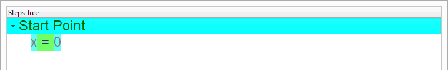
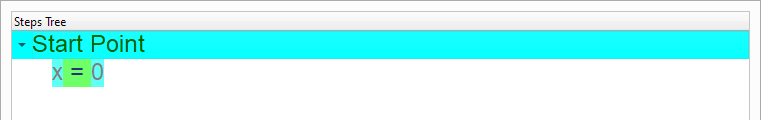
Set y = 10 using the Assignment component
 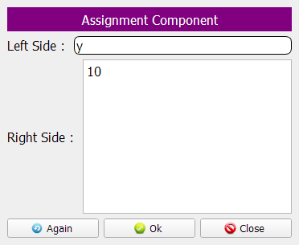
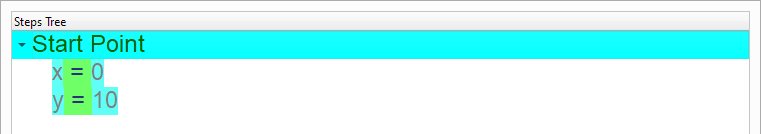
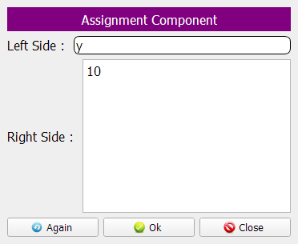
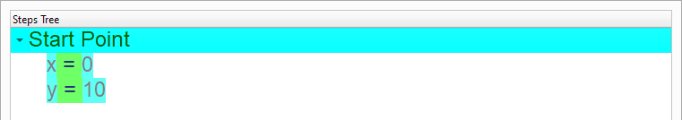
Print (Test 1)

Test the condition: (x = 0 AND nice()) AND (y = 10 AND nice())
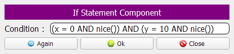Print (Great)


Print (Test 2)

Check the condition: (x = 1 AND nice()) AND (y = 10 AND nice())
 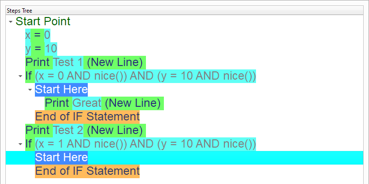
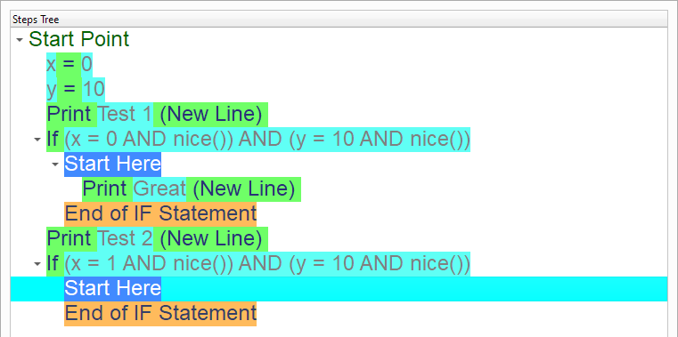
Print (Great)


Print (Test 3)


Check the condition: (x = 0 AND nice()) OR (y = 10 AND nice())

Print (Great)


Define the (Nice) function
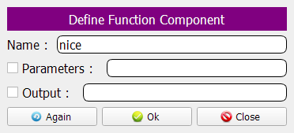Print (Nice)
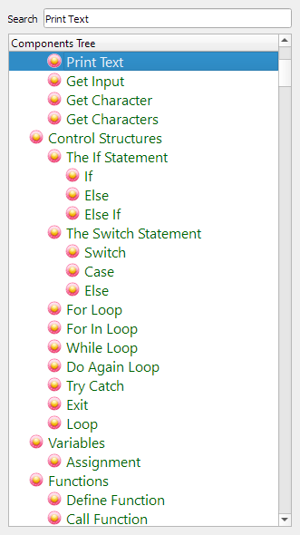

Return (True) from the (Nice) function

Now we have the final Steps Tree in our program